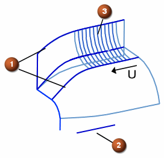

脊线以及截面曲面的限制
截面曲面在 V 方向上以及沿脊线方向上的限制，是由 NX 检查控制线串的端点与相关脊线的关系来确定的。
-
如果控制线串的端点离脊线的端点较远，脊线限制决定实体限制。
-
如果脊线延伸到比任何一条控制线串都长，则实体限制由最短的控制线串的端点来决定。
下面，是脊线确定的实体限制。
|
 |
|
当引导线端点超过脊线的端点时(例如上面的例子)，脊线限制将决定曲面限制。
如果脊线延伸到比任何一条控制线串还长，则实体限制由引导线串的端点来决定。